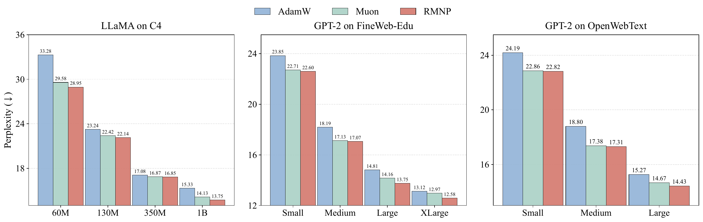
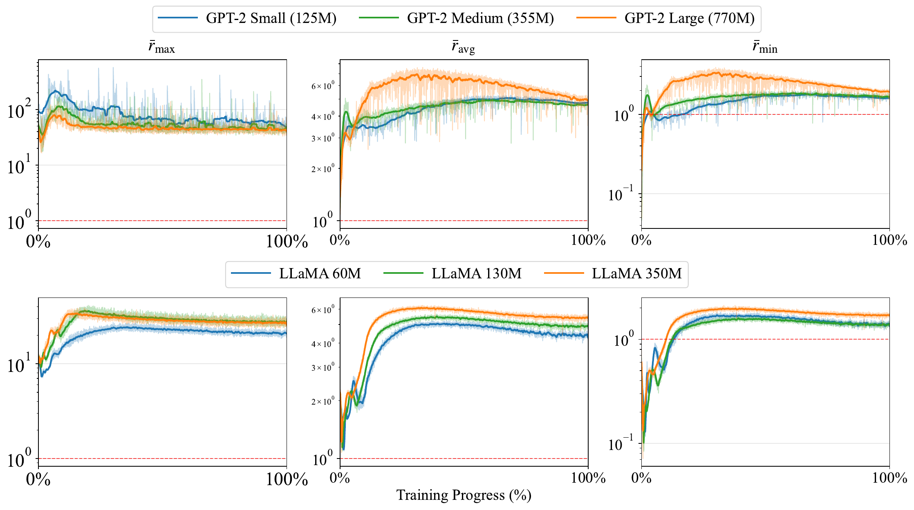
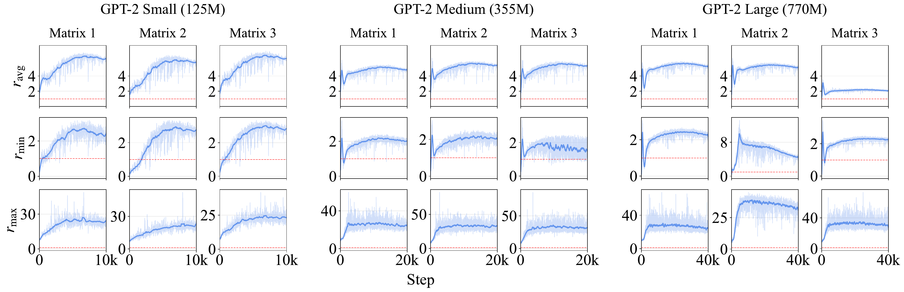
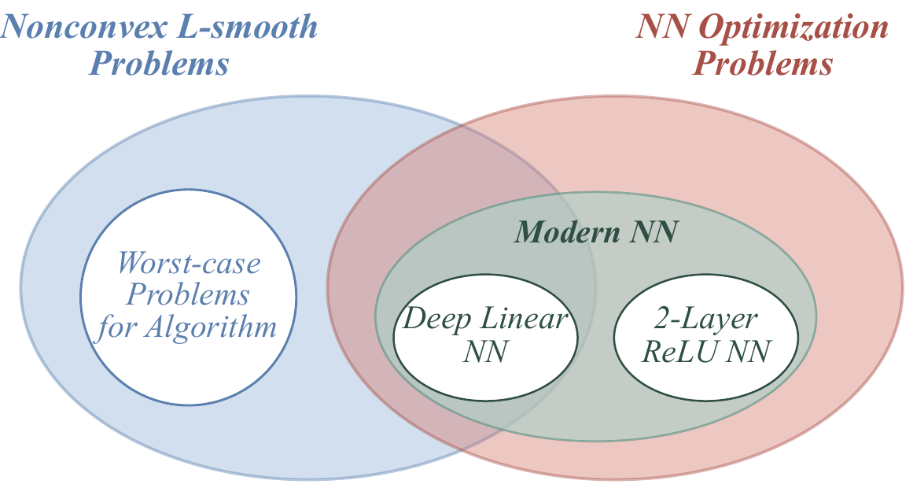
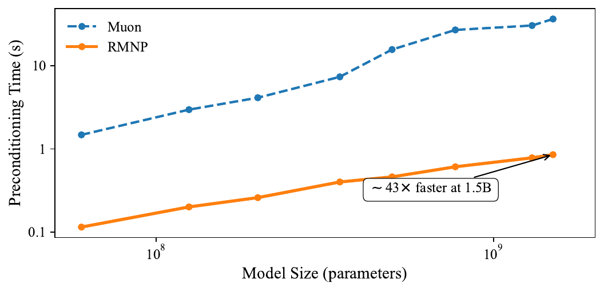

ICML 2026
TL;DR: Why does Muon's orthogonalization help neural networks? We show it adapts to the row-block-diagonal structure of the Transformer Hessian. In that regime the expensive Newton–Schulz step provably collapses to a single row-wise $\ell_2$ normalization — the same update at a fraction of the cost ($\mathcal{O}(mn\cdot\min(m,n)) \to \mathcal{O}(mn)$, a 13–44× speedup).
Preconditioned adaptive methods capture rich curvature information of the loss landscape, and the central challenge is balancing preconditioning effectiveness against computational efficiency. Muon stands out by using Newton–Schulz iteration to obtain preconditioned updates without explicitly constructing the preconditioning matrix — yet its efficiency still leaves room for improvement.
We introduce RMNP (Row-Momentum Normalized Preconditioning), which replaces Newton–Schulz iteration with a simple row-wise ($d_{\text{in}}$) $\ell_2$ normalization, motivated by the empirically observed diagonal block structure of the Transformer layer-wise Hessian. We empirically verify that orthogonalization and row-wise $\ell_2$ normalization are asymptotically equivalent for Transformers. This reduces per-iteration complexity from $\mathcal{O}(mn\cdot\min(m,n))$ to $\mathcal{O}(mn)$ while maintaining comparable performance. Theoretically, we establish non-convex convergence guarantees matching recent results for Muon and reaching minimax-optimal complexity. Extensive LLM pretraining experiments show RMNP delivers competitive performance while substantially reducing preconditioning wall-clock time.

| LLaMA on C4 | GPT-2 on FineWeb-Edu-100B | GPT-2 on OpenWebText | |||||||||
|---|---|---|---|---|---|---|---|---|---|---|---|
| 60M | 130M | 350M | 1B | Small | Medium | Large | XLarge | Small | Medium | Large | |
| AdamW | 33.28 | 23.24 | 17.08 | 15.33 | 23.85 | 18.19 | 14.81 | 13.12 | 24.19 | 18.80 | 15.27 |
| Muon | 29.58 | 22.42 | 16.87 | 14.13 | 22.71 | 17.13 | 14.16 | 12.97 | 22.86 | 17.38 | 14.67 |
| RMNP | 28.95 | 22.14 | 16.85 | 13.75 | 22.60 | 17.07 | 13.75 | 12.58 | 22.82 | 17.31 | 14.43 |
Final validation perplexity ($\downarrow$); best per column in bold (Table 17 in the paper).
A growing body of work studies Muon as an abstract steepest-descent / trust-region method. That view is powerful, but it lives in a worst-case problem class and cannot say why orthogonalization is specifically well-suited to neural networks. We instead start from the concrete curvature of the network.
Recent work shows the layer-wise Hessian of a Transformer is row-block diagonally dominant: unfolded into $m\times m$ blocks of size $n\times n$, the diagonal blocks dominate. By Lemma 4 of Shampoo, Muon descends in the metric
$$ H_{\text{MUON}} = P_t^{1/2}\otimes I_n, \qquad P_t := V_tV_t^\top \in \mathbb{R}^{m\times m}. $$
So $H_{\text{MUON}}$ takes exactly block-diagonal form precisely when $P_t$ is diagonal — and the question reduces to a clean property of the gradient/momentum:
Question. Is $V_tV_t^\top$ (equivalently $G_tG_t^\top$ at initialization) diagonally dominant for neural-network weight matrices?
We answer this two ways: empirically along the entire training trajectory, and theoretically at initialization. Both say yes.
For each row $i$ of the Gram matrix $V_tV_t^\top$ we measure the ratio of the diagonal entry to the average off-diagonal magnitude, $r_i = \dfrac{(V_tV_t^\top)_{ii}}{\frac{1}{m-1}\sum_{j\neq i}\lvert (V_tV_t^\top)_{ij}\rvert}$, and aggregate it into $\overline{r}_{\text{avg}}, \overline{r}_{\min}, \overline{r}_{\max}$. A ratio above $1$ means the diagonal dominates.


🔬 Companion paper · HiLD 2026 Workshop on High-dimensional Learning Dynamics
Worst-case, problem-agnostic analyses cannot explain a norm's fit to neural networks — on the worst-case problem every norm looks equally justified. Real networks live in a much smaller corner of that class, so we analyze the network directly.

At a Gaussian initialization we compute the gradient self outer-product $\mathbb{E}[GG^\top]$ in closed form for three standard settings. In each, the diagonal entries outgrow the off-diagonal ones as the width grows — so $V_tV_t^\top$ is asymptotically diagonal.
| Setting | Diagonal | Off-diagonal | Grows with |
|---|---|---|---|
| Symmetric matrix factorization | $\Theta(k^3)$ | $\Theta(k^2)$ | width $k$ |
| Deep linear — hidden layer $i$ | $\Theta(V_i s_i)$ | $0$ (exactly diagonal) | inner widths |
| Deep linear — output layer | $\Theta(V_L s_L)$ | $\Theta(\prod_{j<L} d_j)$ | inner widths |
| Two-layer ReLU — $W_1$ | $\Theta(d_0 d_2^2 + d_0 d_1 d_2)$ | $\Theta(d_0 d_2)$ | $d_1$ |
| Two-layer ReLU — $W_2$ | $\Theta(d_0^2 d_1^2)$ | $\Theta(d_1)$ | $d_1$ |
Orders of $\mathbb{E}[GG^\top]$ at a Gaussian initialization. In every row the diagonal dominates as the relevant width grows.
Two facts come out of this analysis:
The preconditioner aligns with the Hessian. $P_t=V_tV_t^\top$ becomes diagonal as width grows, so $H_{\text{MUON}}=P_t^{1/2}\otimes I_n$ becomes block-diagonal in the Hessian's row-block structure.
Orthogonalization is row normalization. When $V_tV_t^\top$ is diagonal, $(V_tV_t^\top)^{-1/2}V_t$ is exactly each row of $V_t$ divided by its own $\ell_2$ norm. Newton–Schulz and row normalization become the same operation — this is RMNP.
The structure above makes the algorithm inevitable: keep the dominant diagonal blocks of the preconditioner and drop the rest. The preconditioned update then collapses to a plain row-wise $\ell_2$ normalization of the momentum matrix:
$$ \left[\left(\operatorname{diag}(V_t V_t^\top)\right)^{-1/2} V_t\right]_{i,:} = \frac{V_{t,i:}}{\sqrt{(V_t V_t^\top)_{ii}}} = \frac{V_{t,i:}}{\lVert V_{t,i:}\rVert_{\ell_2}}. $$
Same momentum, same matrix-level adaptivity — the $\mathcal{O}(mn\cdot\min(m,n))$ orthogonalization becomes an $\mathcal{O}(mn)$ row normalization. RMNP's row normalization also needs only a complete row, enabling column-wise sharding under PyTorch FSDP2 without the all-gather Muon requires.

| Model size | Muon (s) | RMNP (s) | Speedup |
|---|---|---|---|
| 60M | 1.480 | 0.115 | 12.9× |
| 125M | 2.975 | 0.201 | 14.8× |
| 200M | 4.140 | 0.260 | 15.9× |
| 355M | 7.380 | 0.401 | 18.4× |
| 500M | 15.720 | 0.462 | 34.0× |
| 770M | 27.070 | 0.611 | 44.3× |
| 1.3B | 30.570 | 0.783 | 39.0× |
| 1.5B | 36.650 | 0.855 | 42.9× |
Preconditioning time over 100 steps, batch size 16, single RTX Pro 6000 GPU.
Under standard non-convex assumptions RMNP matches the best-known Muon guarantees. Under $\lVert\cdot\rVert_F$-smoothness it attains $\mathcal{O}(m^2 L_F \sigma^2 \Delta \epsilon^{-4})$; under the matched $\lVert\cdot\rVert_{\infty,2}$-smoothness it improves to $\mathcal{O}(m L_{\infty,2} \sigma^2 \Delta \epsilon^{-4})$ — a quadratic gain in dimension dependence, mirroring Muon's improvement under nuclear-norm geometry, and reaching the information-theoretic minimax-optimal rate.
| Method | Smoothness | Criterion | Complexity |
|---|---|---|---|
| Muon | $L_F$ | $\lVert\nabla f\rVert_*$ | $\mathcal{O}(m^2 L\sigma^2\Delta\epsilon^{-4})$ |
| Muon | $L_*$ | $\lVert\nabla f\rVert_*$ | $\mathcal{O}(m L_*\sigma^2\Delta\epsilon^{-4})$ |
| RMNP | $L_F$ | $\lVert\nabla f\rVert_F$ | $\mathcal{O}(m^2 L_F\sigma^2\Delta\epsilon^{-4})$ |
| RMNP | $L_F$ | $\lVert\nabla f\rVert_{1,2}$ | $\mathcal{O}(m^2 L_F\sigma^2\Delta\epsilon^{-4})$ |
| RMNP | $L_{\infty,2}$ | $\lVert\nabla f\rVert_{1,2}$ | $\mathcal{O}(m L_{\infty,2}\sigma^2\Delta\epsilon^{-4})$ |
@inproceedings{deng2026rmnp,
title = {RMNP: Row-Momentum Normalized Preconditioning for Scalable Matrix-Based Optimization},
author = {Deng, Shenyang and Ouyang, Zhuoli and Pang, Tianyu and Liu, Zihang and
Jin, Ruochen and Yu, Shuhua and Yang, Yaoqing},
booktitle = {Proceedings of the 43rd International Conference on Machine Learning (ICML)},
year = {2026}
}Companion theory (HiLD 2026 workshop): How Does Orthogonalization Adapt to the Neural-Network Hessian Structure? A Gradient Self Outer-Product Analysis at Initialization.